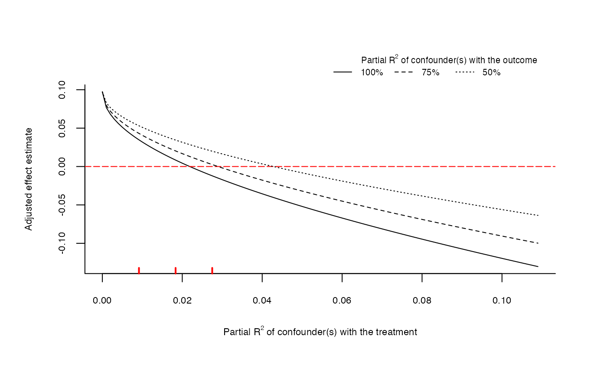

This function performs sensitivity analysis to omitted variables as discussed in Cinelli and Hazlett (2020). It returns an object of
class sensemakr with several pre-computed sensitivity statistics for reporting.
After running sensemakr you may directly use the plot, print and summary methods in the returned object.
sensemakr(...) # S3 method for lm sensemakr( model, treatment, benchmark_covariates = NULL, kd = 1, ky = kd, q = 1, alpha = 0.05, r2dz.x = NULL, r2yz.dx = r2dz.x, bound_label = "Manual Bound", reduce = TRUE, ... ) # S3 method for formula sensemakr( formula, data, treatment, benchmark_covariates = NULL, kd = 1, ky = kd, q = 1, alpha = 0.05, r2dz.x = NULL, r2yz.dx = r2dz.x, bound_label = "", reduce = TRUE, ... ) # S3 method for numeric sensemakr( estimate, se, dof, treatment = "D", q = 1, alpha = 0.05, r2dz.x = NULL, r2yz.dx = r2dz.x, bound_label = "manual_bound", r2dxj.x = NULL, r2yxj.dx = r2dxj.x, benchmark_covariates = "manual_benchmark", kd = 1, ky = kd, reduce = TRUE, ... )
Arguments
| ... | arguments passed to other methods. First argument should either be an |
|---|---|
| model | An |
| treatment | A character vector with the name of the treatment variable of the model. |
| benchmark_covariates | The user has two options: (i) character vector of the names of covariates that will be used to bound the plausible strength of the unobserved confounders. Each variable will be considered separately; (ii) a named list with character vector names of covariates that will be used, as a group, to bound the plausible strength of the unobserved confounders. The names of the list will be used for the benchmark labels. Note: for factor variables with more than two levels, you need to provide the name of each level as encoded in the |
| kd | numeric vector. Parameterizes how many times stronger the confounder is related to the treatment in comparison to the observed benchmark covariate.
Default value is |
| ky | numeric vector. Parameterizes how many times stronger the confounder is related to the outcome in comparison to the observed benchmark covariate.
Default value is the same as |
| q | percent change of the effect estimate that would be deemed problematic. Default is |
| alpha | significance level. |
| r2dz.x | Hypothetical partial R2 of unobserved confounder Z with treatment D, given covariates X. |
| r2yz.dx | Hypothetical partial R2 of unobserved confounder Z with outcome Y, given covariates X and treatment D. |
| bound_label | label to bounds provided manually in |
| reduce | Should the bias adjustment reduce or increase the
absolute value of the estimated coefficient? Default is |
| formula | an object of the class |
| data | data needed only when you pass a formula as first parameter. An object of the class |
| estimate | Coefficient estimate. |
| se | Standard error of the coefficient estimate. |
| dof | Residual degrees of freedom of the regression. |
| r2dxj.x | partial R2 of covariate Xj with the treatment D (after partialling out the effect of the remaining covariates X, excluding Xj). |
| r2yxj.dx | partial R2 of covariate Xj with the outcome Y (after partialling out the effect of the remaining covariates X, excluding Xj). |
Value
An object of class sensemakr, containing:
-
info A
data.framewith the general information of the analysis, including the formula used, the name of the treatment variable, parameter values such asq,alpha, and whether the bias is assumed to reduce the current estimate.-
sensitivity_stats A
data.framewith the sensitivity statistics for the treatment variable, as computed by the functionsensitivity_stats.-
bounds A
data.framewith bounds on the strength of confounding according to some benchmark covariates, as computed by the functionovb_bounds.
References
Cinelli, C. and Hazlett, C. (2020), "Making Sense of Sensitivity: Extending Omitted Variable Bias." Journal of the Royal Statistical Society, Series B (Statistical Methodology).
See also
The function sensemakr is a convenience function. You may use the other sensitivity functions of the package directly, such as the functions for sensitivity plots
(ovb_contour_plot, ovb_extreme_plot) the functions for computing bias-adjusted estimates and t-values (adjusted_estimate, adjusted_t),
the functions for computing the robustness value and partial R2 (robustness_value, partial_r2), or the functions for bounding the strength
of unobserved confounders (ovb_bounds), among others.
Examples
# loads dataset data("darfur") # runs regression model model <- lm(peacefactor ~ directlyharmed + age + farmer_dar + herder_dar + pastvoted + hhsize_darfur + female + village, data = darfur) # runs sensemakr for sensitivity analysis sensitivity <- sensemakr(model, treatment = "directlyharmed", benchmark_covariates = "female", kd = 1:3) # short description of results sensitivity#> Sensitivity Analysis to Unobserved Confounding #> #> Model Formula: peacefactor ~ directlyharmed + age + farmer_dar + herder_dar + #> pastvoted + hhsize_darfur + female + village #> #> Null hypothesis: q = 1 and reduce = TRUE #> #> Unadjusted Estimates of ' directlyharmed ': #> Coef. estimate: 0.09732 #> Standard Error: 0.02326 #> t-value: 4.18445 #> #> Sensitivity Statistics: #> Partial R2 of treatment with outcome: 0.02187 #> Robustness Value, q = 1 : 0.13878 #> Robustness Value, q = 1 alpha = 0.05 : 0.07626 #> #> For more information, check summary.#> Sensitivity Analysis to Unobserved Confounding #> #> Model Formula: peacefactor ~ directlyharmed + age + farmer_dar + herder_dar + #> pastvoted + hhsize_darfur + female + village #> #> Null hypothesis: q = 1 and reduce = TRUE #> -- This means we are considering biases that reduce the absolute value of the current estimate. #> -- The null hypothesis deemed problematic is H0:tau = 0 #> #> Unadjusted Estimates of 'directlyharmed': #> Coef. estimate: 0.0973 #> Standard Error: 0.0233 #> t-value (H0:tau = 0): 4.1844 #> #> Sensitivity Statistics: #> Partial R2 of treatment with outcome: 0.0219 #> Robustness Value, q = 1: 0.1388 #> Robustness Value, q = 1, alpha = 0.05: 0.0763 #> #> Verbal interpretation of sensitivity statistics: #> #> -- Partial R2 of the treatment with the outcome: an extreme confounder (orthogonal to the covariates) that explains 100% of the residual variance of the outcome, would need to explain at least 2.19% of the residual variance of the treatment to fully account for the observed estimated effect. #> #> -- Robustness Value, q = 1: unobserved confounders (orthogonal to the covariates) that explain more than 13.88% of the residual variance of both the treatment and the outcome are strong enough to bring the point estimate to 0 (a bias of 100% of the original estimate). Conversely, unobserved confounders that do not explain more than 13.88% of the residual variance of both the treatment and the outcome are not strong enough to bring the point estimate to 0. #> #> -- Robustness Value, q = 1, alpha = 0.05: unobserved confounders (orthogonal to the covariates) that explain more than 7.63% of the residual variance of both the treatment and the outcome are strong enough to bring the estimate to a range where it is no longer 'statistically different' from 0 (a bias of 100% of the original estimate), at the significance level of alpha = 0.05. Conversely, unobserved confounders that do not explain more than 7.63% of the residual variance of both the treatment and the outcome are not strong enough to bring the estimate to a range where it is no longer 'statistically different' from 0, at the significance level of alpha = 0.05. #> #> Bounds on omitted variable bias: #> #> --The table below shows the maximum strength of unobserved confounders with association with the treatment and the outcome bounded by a multiple of the observed explanatory power of the chosen benchmark covariate(s). #> #> Bound Label R2dz.x R2yz.dx Treatment Adjusted Estimate Adjusted Se #> 1x female 0.0092 0.1246 directlyharmed 0.0752 0.0219 #> 2x female 0.0183 0.2493 directlyharmed 0.0529 0.0204 #> 3x female 0.0275 0.3741 directlyharmed 0.0304 0.0187 #> Adjusted T Adjusted Lower CI Adjusted Upper CI #> 3.4389 0.0323 0.1182 #> 2.6002 0.0130 0.0929 #> 1.6281 -0.0063 0.0670#> \begin{table}[!h] #> \centering #> \begin{tabular}{lrrrrrr} #> \multicolumn{7}{c}{Outcome: \textit{peacefactor}} \\ #> \hline \hline #> Treatment: & Est. & S.E. & t-value & $R^2_{Y \sim D |{\bf X}}$ & $RV_{q = 1}$ & $RV_{q = 1, \alpha = 0.05}$ \\ #> \hline #> \textit{directlyharmed} & 0.097 & 0.023 & 4.184 & 2.2\% & 13.9\% & 7.6\% \\ #> \hline #> df = 783 & & \multicolumn{5}{r}{ \small \textit{Bound (1x female)}: $R^2_{Y\sim Z| {\bf X}, D}$ = 12.5\%, $R^2_{D\sim Z| {\bf X} }$ = 0.9\%} \\ #> \end{tabular} #> \end{table}